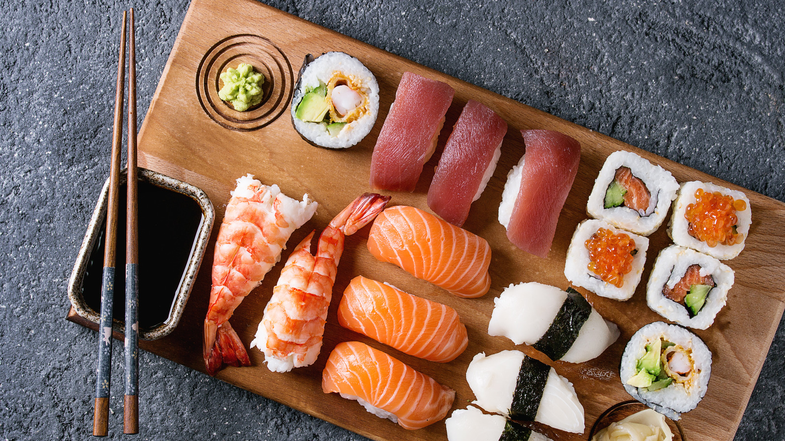

Sushi
This is why I think sushi deserves to be at the top of my list:
yes, it can give you salmonella, but that's what wasabi is for! fun fact: Did you know wasabi is extremely rare and hard to find, so most sushi resturants actually use horseradish and dye it green.

HOME